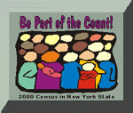

State of New York,
George E. Pataki, Governor
Office of Mental Health,
James L. Stone, MSW, CSW, Commissioner
Contents
Announcements
Links
November 9, 1999
Governor Pataki announces major mental health initiatives
Contents
Mission and Vision
OMH Strategic Framework
1999-2000 Executive Budget (Legislative Testimony by Commissioner Stone)
OMH Directory
Managed Care
September 30, 1999
OMH Quarterly
Employment Opportunities
Latest Findings from Services Research
OMH Finance - Consolidated Fiscal Reporting (CFR)
Police/Mental Health Coordination Project
Local/Correctional Suicide Prevention Crisis Service Program
Bureau of Policy and Regulations
OMH Learning Center
OMH Medical Records Projects
Application for Prior Approval Review (OMH-165 3/99)
Violence Prevention: Creating safer schools in New York State
National Dialogue on Co-Occurring Mental Health and Substance Abuse Disorders
NYS Chartbook of Mental Health Information
September 28, 1999
Announcements:
Ninth Annual Institute on Mental Health Management Information
November 8, 1999
November 9-10
Holiday Inn Turf, Albany, NY
New York State Office of Mental Health
Twelfth Annual Research Conference
December 6, 7 and 8
Desmond Hotel, Albany, NY
Availability of audio and video tapes
For further information, please call 518-473-7768.
OMH Web Administrator
